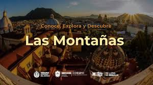
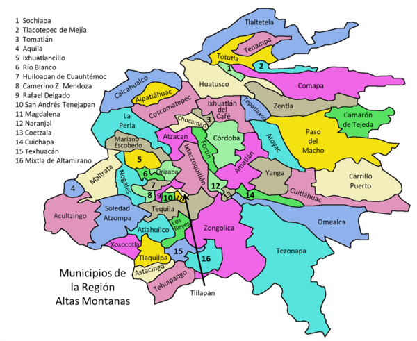
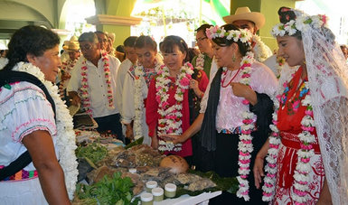
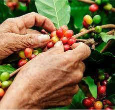
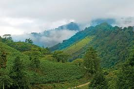

Historia
[Imagen: historia de la región — ferrocarril, fábricas o asentamientos antiguos]
La Región de las Montañas fue habitada desde tiempos prehispánicos por pueblos nahuas y totonacos, quienes aprovechaban los valles fértiles y las rutas montañosas. Durante la Colonia, se establecieron haciendas ganaderas y cañaverales, pero su verdadero auge llegó en el siglo XIX.
Con la construcción del Ferrocarril Mexicano (1873), que conectaba Veracruz con la Ciudad de México, ciudades como Orizaba, Córdoba y Río Blanco se convirtieron en centros industriales clave. Surgieron fábricas textiles que empleaban a miles de trabajadores, lo que dio origen a una fuerte conciencia obrera. La huelga de Río Blanco en 1907 —brutalmente reprimida— se convirtió en un catalizador del movimiento revolucionario mexicano.
Ubicación Geográfica

[Imagen: mapa o paisaje con volcanes y valles]
Ubicada en el centro-oeste de Veracruz, limita con el estado de Puebla al oeste y con la Región Capital al este. Incluye los municipios de Orizaba, Córdoba, Fortín, Río Blanco, Nogales, Ixtaczoquitlán, Atzacan, Mariano Escobedo y Huiloapan de Cuauhtémoc.
La región está dominada por la Sierra Madre Oriental y dos gigantes geológicos: el Pico de Orizaba (Citlaltépetl), volcán más alto de México (5,636 msnm), y el Cofre de Perote (Naupan), un estratovolcán extinto. Entre ellos se extiende el Valle de Orizaba-Córdoba, una de las zonas agrícolas más productivas del estado.
Cultura
[Imagen: danza, música o ferrocarril histórico]
La identidad cultural montañesa es una fusión de raíces indígenas, hispánicas y obreras. Se conservan expresiones como:
- Danza de los Negritos: de origen afroindígena, con máscaras y cascabeles.
- Danza de los Moros y Cristianos: representación teatral de la Reconquista española.
- Música de banda y son jarocho serrano, con variaciones rítmicas más lentas que en la costa.
La memoria ferroviaria se mantiene viva en museos como el Museo del Ferrocarril en Orizaba y en leyendas como la del “Tren Fantasma de Metlac”. La tradición textil también perdura en talleres familiares y en el uso de rebozos y huipiles bordados.
Importancia
[Imagen: industria, agricultura o turismo de montaña]
La región es un pilar económico del estado por varias razones:
- Agricultura de altura: café, caña de azúcar, frutas (durazno, manzana, capulín) y hortalizas.
- Industria azucarera y textil: aunque disminuida, sigue siendo relevante en Córdoba y Orizaba.
- Transporte: el corredor Orizaba–Córdoba es clave para el tránsito terrestre entre el Golfo y el centro del país.
- Turismo de montaña y aventura: el Pico de Orizaba atrae a alpinistas de todo el mundo; el Cofre de Perote es ideal para senderismo y observación de aves.
Tradiciones
[Imagen: pastorela, altar o pan artesanal]
Las tradiciones reflejan la vida comunitaria y la fe popular:
- Quema de castillos durante fiestas patronales.
- Pastorelas en diciembre, con personajes como el Diablo, el Ermitaño y los Pastores.
- Paseos de la Niña: procesiones con imágenes de la Virgen adornadas con flores.
- Elaboración de pan artesanal: bolillos, teleras y “pan de dulce” en hornos de leña.
- Dulces de leche: cajetas, jamoncillos y ate de frutas.
Festividades Importantes

[Imagen: feria, carnaval o conmemoración histórica]
- Feria de la Candelaria (Orizaba) – febrero: con jaripeos, exposiciones ganaderas y conciertos.
- Feria del Café (Córdoba) – noviembre: muestra gastronómica y cultural del grano local.
- Carnaval de Río Blanco – febrero/marzo: con comparsas y bailes populares.
- Conmemoración de la Huelga de Río Blanco – 7 de enero: actos cívicos y teatro histórico.
- Día de Muertos serrano: altares con frutas de temporada, pan de muerto y copal.
Comida Típica

[Imagen: platillos típicos de la región]
La cocina montañesa combina ingredientes del valle y la sierra:
- Mole de olla: caldo con chayote, elote, carne y chiles.
- Barbacoa de res: cocida en horno de tierra o vapor.
- Tamales de ceniza: envueltos en hoja de maíz y cocidos entre brasas.
- Garnachas y chalupas: tortillas fritas con salsa, queso y cebolla.
- Pan de Orizaba: crujiente por fuera, esponjoso por dentro, tradición desde el siglo XIX.
- Bebidas: atole agrio, café de altura, ponche de frutas con caña y tejate (en zonas indígenas).
Flora

[Imagen: bosque de pinos, orquídeas o frutales]
La vegetación varía según la altitud:
- Zonas altas (más de 3,000 msnm): bosques de oyamel, pino, encino y pastizales alpinos.
- Medianías (1,500–3,000 msnm): liquidámbar, fresno, madroño y árboles frutales como durazno, manzana y capulín.
- Valles (menos de 1,500 msnm): selva baja caducifolia, caña de azúcar y cafetales.
- Epífitas: orquídeas, bromelias y helechos en los bosques nublados.
Fauna
[Imagen: puma, águila real o colibrí]
La región alberga especies emblemáticas del centro de México:
- Mamíferos: venado cola blanca, puma, coyote, zorrillo, tlacuache.
- Aves: águila real (en el Pico de Orizaba), colibrí, tecolote serrano, zanate y aves migratorias.
- Reptiles y anfibios: lagartijas de montaña, ranas de arroyo.
- Especies acuáticas: truchas arcoíris (introducidas) y cangrejos de río en arroyos limpios.
El Pico de Orizaba forma parte de la Reserva de la Biosfera Citlaltépetl, protegida por su biodiversidad única.
Datos Interesantes
[Imagen: Puente de Metlac, Pico de Orizaba o calle histórica]
- El Pico de Orizaba es el volcán más alto de México y el tercero más alto de América.
- Orizaba fue la primera ciudad de América Latina en contar con alumbrado eléctrico público (1883), gracias a la planta hidroeléctrica de El Molino.
- El Puente de Metlac, obra del ingeniero Francisco de Garay (1897), es una maravilla de la ingeniería ferroviaria y apareció en los billetes de 20 pesos de la serie D (1980s).
- El nombre Citlaltépetl (náhuatl) significa “cerro de la estrella”, por su cumbre nevada que brilla en la noche.
- La región fue escenario de batallas durante la Intervención Francesa y la Revolución Mexicana.